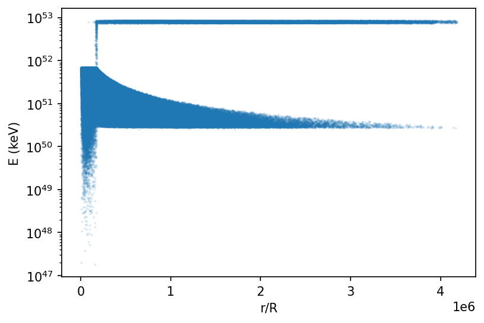
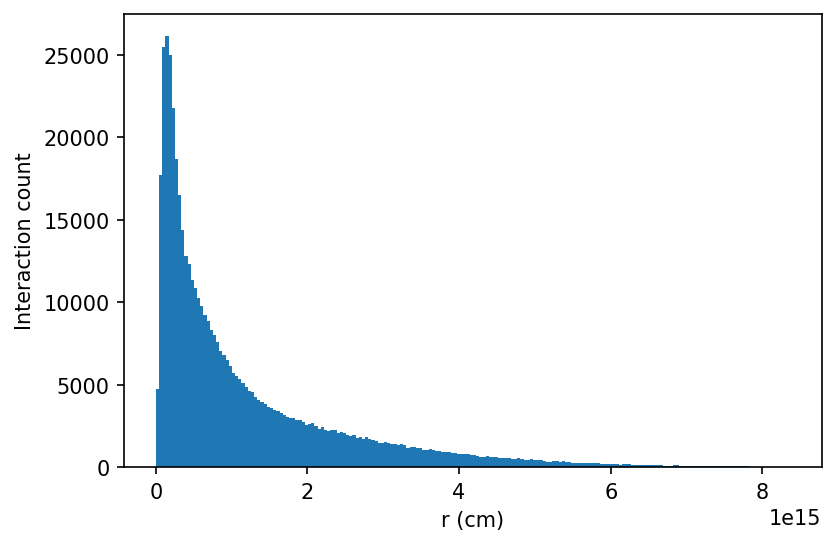
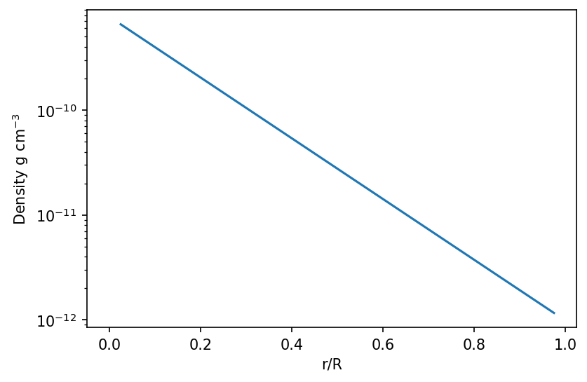
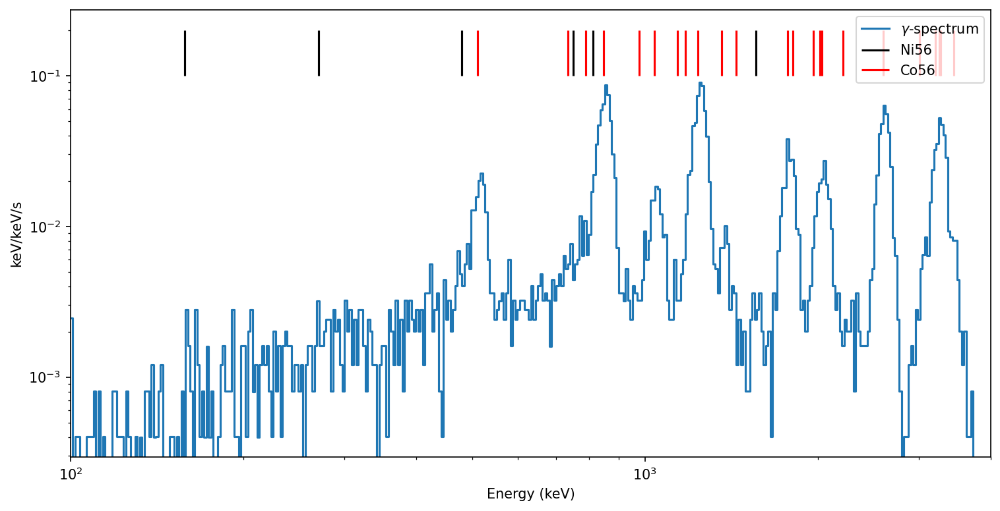
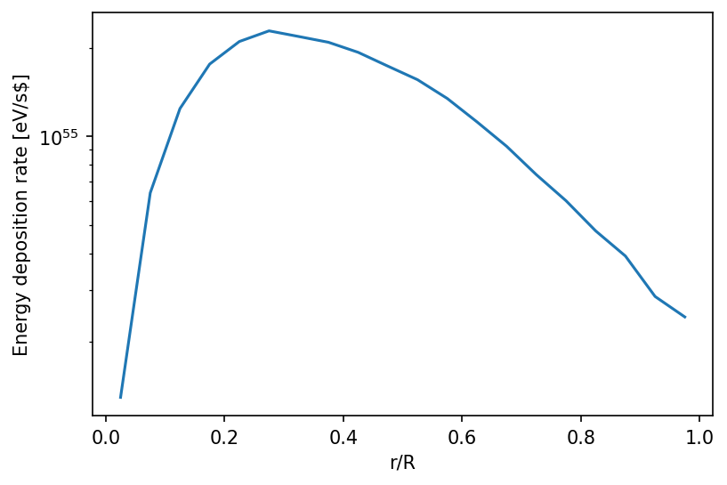
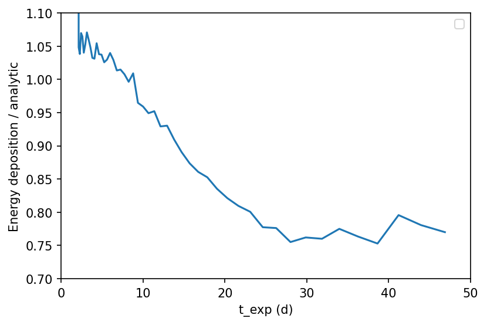

You can interact with this notebook online: Launch notebook
Gamma-ray energy deposition¶
This notebook provides the initial implementation of Gamma-ray energy deposition into an arbitrary ejecta. It is a WORK IN PROGRESS and should NOT be used for any science work until further notice.
Main loop¶
Generates a simple 1D ejecta and a list of gamma-ray objects.
Runs packets of gamma-rays through the ejecta. Handles interactions by calling the appropriate function.
Adds deposited energy and output energy to 2 different dataframes.
Model setup¶
[1]:
import numpy as np
import matplotlib.pyplot as plt
from tardis.model import Radial1DModel
from tardis.io.config_reader import Configuration
from tardis.plasma.properties import Density, Abundance, IsotopeAbundance, IsotopeNumberDensity, AtomicData, AtomicMass, IsotopeMass, NumberDensity, SelectedAtoms
from tardis.plasma.base import BasePlasma
from tardis.io.atom_data import AtomData
import astropy.units as u
from tardis.energy_input.indivisible_packets import main_gamma_ray_loop
# Adjust model
config = Configuration.from_yaml("../../../tardis/io/tests/data/tardis_configv1_density_exponential_nebular.yml")
config.model.structure.velocity.start = 1 * u.km / u.s
config.model.structure.density.rho_0 = 5e2 * u.g / (u.cm ** 3)
config.supernova.time_explosion = 2.0 * u.d
config.atom_data = "kurucz_cd23_chianti_H_He.h5"
model = Radial1DModel.from_config(config)
# Construct plasma
input = [Density, Abundance, IsotopeAbundance, AtomicData, AtomicMass, IsotopeNumberDensity, NumberDensity, SelectedAtoms, IsotopeMass]
plasma = BasePlasma(
plasma_properties=input,
density = model.density,
abundance = model.abundance,
isotope_abundance = model.raw_isotope_abundance,
atomic_data = AtomData.from_hdf(config.atom_data)
)
# Set up packet count
num_packets = 500000
# Lock seed
np.random.seed(1)
Generate plasma¶
[2]:
from tardis.plasma.properties import Density, Abundance, IsotopeAbundance, IsotopeNumberDensity, AtomicData, AtomicMass, IsotopeMass, NumberDensity, SelectedAtoms
from tardis.plasma.base import BasePlasma
from tardis.io.atom_data import AtomData
input = [Density, Abundance, IsotopeAbundance, AtomicData, AtomicMass, IsotopeNumberDensity, NumberDensity, SelectedAtoms, IsotopeMass]
plasma = BasePlasma(
plasma_properties=input,
density = model.density,
abundance = model.abundance,
isotope_abundance = model.raw_isotope_abundance,
atomic_data = AtomData.from_hdf(config.atom_data)
)
[3]:
# Compute energy deposition rate
# ejecta_energy_df is the deposited energy
# ejecta_plot_energy_df is information for plotting
# escape_energy is the escaping energy
# decayed_packet_count is the number of packets created per shell
# energy_plot_positrons is the deposited energy from positrons
# estimated_deposition is the deposited energy from the Kasen (2006) estimator (currently not functional)
(
energy_df,
energy_plot_df,
escape_energy,
decayed_packet_count,
energy_plot_positrons,
estimated_deposition
) = main_gamma_ray_loop(
num_packets,
model,
plasma,
time_steps=50,
time_end=50.0,
path_to_decay_data="~/Downloads/tardisnuclear/decay_radiation.h5"
)
ejecta_energy = energy_plot_df["energy_input"]
ejecta_energy_r = energy_plot_df["energy_input_r"]
energy_input_time = energy_plot_df["energy_input_time"]
energy_input_type = energy_plot_df["energy_input_type"]
Total gamma-ray energy
6.382887152600844e+49
Total positron energy
8.450910428412662e+47
Initializing packets
Total packets: 500001
Energy per packet 7.967753746980741e+52
/home/afullard/tardis/tardis/energy_input/indivisible_packets.py:184: NumbaPerformanceWarning: np.dot() is faster on contiguous arrays, called on (array(float64, 1d, A), array(float64, 1d, C))
packet.energy_rf = packet.energy_cmf / doppler_gamma(
Total positron energy from packets
8.417991464160715e+47
Total CMF energy
3.723828286636142e+58
Total RF energy
3.725094038470937e+58
/home/afullard/tardis/tardis/energy_input/indivisible_packets.py:1004: NumbaPerformanceWarning: np.dot() is faster on contiguous arrays, called on (array(float64, 1d, A), array(float64, 1d, C))
packet, ejecta_energy_gained = process_packet_path(packet)
/home/afullard/tardis/tardis/energy_input/indivisible_packets.py:956: NumbaPerformanceWarning: np.dot() is faster on contiguous arrays, called on (array(float64, 1d, C), array(float64, 1d, A))
) = distance_trace(
Entering gamma ray loop for 500001 packets
Escaped packets: 81278
Scattered packets: 23178
Final energy to test for conservation
3.717670037800572e+58
Plotting results¶
Energy deposited at a given radius
[4]:
fig = plt.figure(dpi=150, facecolor='w')
ax = fig.add_subplot(111)
scatter = ax.scatter(np.array(ejecta_energy_r)/np.max(model.v_outer.value), np.array(ejecta_energy), s=1, alpha=0.1)
ax.set_xlabel("r/R")
ax.set_ylabel("E (keV)")
ax.semilogy();

Interactions binned by radius¶
[5]:
fig = plt.figure(dpi=150, facecolor='w')
ax = fig.add_subplot(111)
ax.hist(np.array(ejecta_energy_r), bins=200)
#ax.set_xlim(0, 1)
ax.set_xlabel("r (cm)")
ax.set_ylabel("Interaction count");

Density Profile¶
[6]:
fig = plt.figure(dpi=150, facecolor='w')
plt.semilogy(model.r_middle/np.max(model.r_outer), model.density)
plt.plot(0,0)
plt.ylabel("Density g cm$^{-3}$")
plt.xlabel("r/R");

Fraction of energy escaping from the ejecta¶
[7]:
np.sum(np.sum(escape_energy) / (np.sum(escape_energy) + np.sum(energy_df)))
[7]:
1.657117395460646e-53
Spectrum of escape energy at the final time step¶
[8]:
from tardis.energy_input.energy_source import read_artis_lines
ni56_lines = read_artis_lines("ni56", "~/Downloads/tardisnuclear/")
co56_lines = read_artis_lines("co56", "~/Downloads/tardisnuclear/")
plt.figure(figsize=(12, 6), dpi=150)
plt.step(escape_energy.index, escape_energy.iloc[:,49], label="$\gamma$-spectrum", where="post")
plt.xlabel("Energy (keV)")
plt.ylabel("keV/keV/s");
plt.loglog()
plt.xlim(100, 4000)
#plt.ylim(0.01, 100)
plt.vlines(ni56_lines.energy*1000, 0.1, 0.2, color="k", label="Ni56")
plt.vlines(co56_lines.energy*1000, 0.1, 0.2, color="r", label="Co56")
plt.legend()
/home/afullard/tardis/tardis/energy_input/energy_source.py:250: ParserWarning: Falling back to the 'python' engine because the 'c' engine does not support regex separators (separators > 1 char and different from '\s+' are interpreted as regex); you can avoid this warning by specifying engine='python'.
return pd.read_csv(
[8]:
<matplotlib.legend.Legend at 0x7f2d73b9e580>

Energy deposition rate¶
Dataframe index is the radial grid location. Columns are time steps in seconds
[9]:
energy_df
[9]:
| 1.728000e+05 | 1.842903e+05 | 1.965447e+05 | 2.096139e+05 | 2.235522e+05 | 2.384173e+05 | 2.542708e+05 | 2.711786e+05 | 2.892106e+05 | 3.084416e+05 | ... | 2.269320e+06 | 2.420218e+06 | 2.581151e+06 | 2.752784e+06 | 2.935830e+06 | 3.131048e+06 | 3.339247e+06 | 3.561290e+06 | 3.798098e+06 | 4.050652e+06 | |
|---|---|---|---|---|---|---|---|---|---|---|---|---|---|---|---|---|---|---|---|---|---|
| 0 | 1.294021e+54 | 1.114055e+53 | 1.099417e+53 | 1.145196e+53 | 6.985992e+52 | 1.559680e+53 | 1.132561e+53 | 1.150313e+53 | 1.245701e+53 | 9.349474e+52 | ... | 2.785625e+52 | 2.011481e+52 | 9.433285e+51 | 1.291291e+52 | 1.496113e+52 | 1.443419e+52 | 1.065273e+52 | 1.076108e+52 | 8.903642e+51 | 7.441180e+51 |
| 1 | 6.424030e+54 | 6.521538e+53 | 6.970475e+53 | 7.781927e+53 | 7.466519e+53 | 6.541897e+53 | 5.479004e+53 | 6.608852e+53 | 6.894159e+53 | 5.724835e+53 | ... | 1.220006e+53 | 1.153451e+53 | 1.189081e+53 | 9.767378e+52 | 8.049019e+52 | 7.613144e+52 | 7.005247e+52 | 6.722733e+52 | 5.885149e+52 | 4.869317e+52 |
| 2 | 1.243092e+55 | 1.451440e+54 | 1.374568e+54 | 1.127461e+54 | 1.336598e+54 | 1.147720e+54 | 1.335489e+54 | 1.271224e+54 | 1.320112e+54 | 1.230945e+54 | ... | 2.390324e+53 | 2.262535e+53 | 2.054400e+53 | 1.968436e+53 | 1.732775e+53 | 1.515853e+53 | 1.384603e+53 | 1.369447e+53 | 1.254276e+53 | 1.073970e+53 |
| 3 | 1.761313e+55 | 1.947755e+54 | 1.776917e+54 | 2.060552e+54 | 1.837025e+54 | 1.753145e+54 | 1.897809e+54 | 1.803495e+54 | 1.619915e+54 | 1.585062e+54 | ... | 3.530774e+53 | 3.016611e+53 | 2.881233e+53 | 2.731115e+53 | 2.656203e+53 | 2.203813e+53 | 2.107709e+53 | 1.972879e+53 | 1.734955e+53 | 1.516516e+53 |
| 4 | 2.102342e+55 | 2.162071e+54 | 2.327412e+54 | 2.192378e+54 | 2.078727e+54 | 2.054652e+54 | 2.242408e+54 | 2.069014e+54 | 2.146158e+54 | 1.916381e+54 | ... | 4.199641e+53 | 3.751811e+53 | 3.333814e+53 | 3.298312e+53 | 3.041697e+53 | 2.856901e+53 | 2.335678e+53 | 2.191089e+53 | 2.081413e+53 | 1.814772e+53 |
| 5 | 2.285436e+55 | 2.416263e+54 | 2.363351e+54 | 2.352964e+54 | 2.514444e+54 | 2.235501e+54 | 2.234030e+54 | 2.134927e+54 | 2.190298e+54 | 2.176699e+54 | ... | 4.436655e+53 | 4.012957e+53 | 3.805985e+53 | 3.386788e+53 | 3.075307e+53 | 2.952429e+53 | 2.516855e+53 | 2.483600e+53 | 2.149503e+53 | 1.824387e+53 |
| 6 | 2.186409e+55 | 2.531286e+54 | 2.084113e+54 | 2.371399e+54 | 2.487022e+54 | 2.301783e+54 | 2.128695e+54 | 2.420113e+54 | 2.125396e+54 | 1.977955e+54 | ... | 4.286466e+53 | 3.963379e+53 | 3.759482e+53 | 3.214953e+53 | 3.278382e+53 | 2.808151e+53 | 2.282004e+53 | 2.329993e+53 | 2.011537e+53 | 1.819392e+53 |
| 7 | 2.089776e+55 | 2.020226e+54 | 2.197213e+54 | 2.312809e+54 | 2.420638e+54 | 2.115934e+54 | 2.120140e+54 | 2.133801e+54 | 1.971982e+54 | 1.998411e+54 | ... | 3.765806e+53 | 3.486459e+53 | 3.189128e+53 | 2.849522e+53 | 2.685297e+53 | 2.477824e+53 | 2.235941e+53 | 2.006410e+53 | 1.797902e+53 | 1.550234e+53 |
| 8 | 1.931558e+55 | 2.330897e+54 | 2.118056e+54 | 2.095729e+54 | 1.970187e+54 | 2.023845e+54 | 2.044720e+54 | 1.965058e+54 | 1.777854e+54 | 1.892962e+54 | ... | 3.575854e+53 | 3.167847e+53 | 2.871783e+53 | 2.662004e+53 | 2.240634e+53 | 1.931387e+53 | 1.750666e+53 | 1.699308e+53 | 1.386791e+53 | 1.182158e+53 |
| 9 | 1.733628e+55 | 1.712577e+54 | 1.776412e+54 | 1.912292e+54 | 1.815523e+54 | 1.761190e+54 | 1.674737e+54 | 1.651097e+54 | 1.734570e+54 | 1.612256e+54 | ... | 2.887335e+53 | 2.555411e+53 | 2.254319e+53 | 1.910137e+53 | 1.931402e+53 | 1.582912e+53 | 1.442403e+53 | 1.295965e+53 | 1.114299e+53 | 9.479074e+52 |
| 10 | 1.558649e+55 | 1.614724e+54 | 1.579782e+54 | 1.568471e+54 | 1.475923e+54 | 1.605723e+54 | 1.562913e+54 | 1.513519e+54 | 1.370241e+54 | 1.389399e+54 | ... | 2.326318e+53 | 1.942654e+53 | 1.892516e+53 | 1.699920e+53 | 1.411863e+53 | 1.174688e+53 | 1.102136e+53 | 1.030153e+53 | 8.797575e+52 | 8.144082e+52 |
| 11 | 1.345720e+55 | 1.365996e+54 | 1.312901e+54 | 1.373651e+54 | 1.234595e+54 | 1.347980e+54 | 1.249817e+54 | 1.336880e+54 | 1.195798e+54 | 1.303566e+54 | ... | 1.801075e+53 | 1.627996e+53 | 1.310555e+53 | 1.217037e+53 | 1.008510e+53 | 9.666210e+52 | 8.610622e+52 | 7.585843e+52 | 6.065897e+52 | 5.992769e+52 |
| 12 | 1.120496e+55 | 1.177862e+54 | 1.177369e+54 | 9.503871e+53 | 1.131716e+54 | 1.076152e+54 | 1.066097e+54 | 1.048945e+54 | 1.135961e+54 | 1.078539e+54 | ... | 1.347919e+53 | 1.060845e+53 | 9.493579e+52 | 8.359337e+52 | 8.081839e+52 | 5.791931e+52 | 5.256005e+52 | 5.509116e+52 | 4.560378e+52 | 4.005400e+52 |
| 13 | 9.249205e+54 | 9.895975e+53 | 1.055769e+54 | 9.550048e+53 | 9.326732e+53 | 9.410564e+53 | 7.970625e+53 | 9.332849e+53 | 9.367567e+53 | 9.169622e+53 | ... | 7.990857e+52 | 7.381347e+52 | 6.632041e+52 | 5.888320e+52 | 5.414329e+52 | 4.833551e+52 | 4.294030e+52 | 3.688827e+52 | 3.492973e+52 | 3.141167e+52 |
| 14 | 7.406631e+54 | 7.611783e+53 | 7.990405e+53 | 9.662193e+53 | 6.378580e+53 | 6.802975e+53 | 6.788027e+53 | 7.647262e+53 | 8.165944e+53 | 7.461926e+53 | ... | 6.453586e+52 | 5.600107e+52 | 4.966954e+52 | 4.635212e+52 | 3.168818e+52 | 3.282064e+52 | 3.699669e+52 | 2.922765e+52 | 1.919662e+52 | 1.939362e+52 |
| 15 | 6.038158e+54 | 6.826865e+53 | 6.955535e+53 | 5.944671e+53 | 5.417792e+53 | 5.378144e+53 | 6.694507e+53 | 6.054580e+53 | 5.720831e+53 | 6.399594e+53 | ... | 4.685884e+52 | 3.697020e+52 | 3.218507e+52 | 2.385386e+52 | 2.830414e+52 | 2.465026e+52 | 2.618104e+52 | 1.698901e+52 | 1.731674e+52 | 1.677710e+52 |
| 16 | 4.766276e+54 | 5.522833e+53 | 5.422096e+53 | 5.430582e+53 | 5.304559e+53 | 4.767792e+53 | 5.044535e+53 | 4.320005e+53 | 4.962449e+53 | 4.347555e+53 | ... | 3.333932e+52 | 2.704946e+52 | 2.528390e+52 | 2.295823e+52 | 1.926514e+52 | 1.794487e+52 | 1.377478e+52 | 1.322412e+52 | 1.337046e+52 | 1.224612e+52 |
| 17 | 3.915303e+54 | 4.092655e+53 | 4.201965e+53 | 4.170580e+53 | 4.393483e+53 | 4.118154e+53 | 3.808720e+53 | 4.237100e+53 | 3.584309e+53 | 3.572755e+53 | ... | 1.779842e+52 | 1.691526e+52 | 1.748371e+52 | 1.625370e+52 | 1.375146e+52 | 1.468147e+52 | 7.564742e+51 | 9.332414e+51 | 9.432410e+51 | 7.545451e+51 |
| 18 | 2.851168e+54 | 2.921911e+53 | 3.103969e+53 | 2.966269e+53 | 3.530834e+53 | 3.800189e+53 | 3.047271e+53 | 3.202042e+53 | 2.931528e+53 | 2.935129e+53 | ... | 1.390850e+52 | 7.835255e+51 | 1.417828e+52 | 8.433077e+51 | 1.167591e+52 | 1.048080e+52 | 9.048712e+51 | 8.405965e+51 | 5.067703e+51 | 5.144075e+51 |
| 19 | 2.429436e+54 | 2.722350e+53 | 1.704218e+53 | 3.130576e+53 | 2.615098e+53 | 2.103863e+53 | 2.107474e+53 | 1.541930e+53 | 2.191138e+53 | 1.744488e+53 | ... | 7.930481e+51 | 7.593183e+51 | 7.127995e+51 | 6.398788e+51 | 5.894358e+51 | 4.894434e+51 | 7.541950e+51 | 4.644777e+51 | 4.723810e+51 | 3.700230e+51 |
20 rows × 50 columns
Energy deposition rate versus radius at time_explosion¶
[10]:
fig = plt.figure(dpi=150, facecolor='w')
plt.semilogy(model.v_middle/np.max(model.v_outer), energy_df.iloc[:, 0])
plt.xlabel("r/R")
plt.ylabel("Energy deposition rate [eV/s$]");

Energy Deposition rate versus time compared to the analytic estimate¶
[11]:
energy = energy_df.T.sum(axis=1) * u.eV.to('erg')
def analytic_estimate(t):
return 0.6 * (0.97 * (1 - np.exp(-(40 / t)**2)) + 0.03) * (6.45 * np.exp(-t/8.8) + 1.45 * np.exp(-t/111.3)) * 1e43
t_tardis = energy.index * u.s.to('d')
plt.figure(dpi=150)
plt.plot(t_tardis, energy / analytic_estimate(t_tardis), "-")
plt.xlabel("t_exp (d)")
plt.ylabel("Energy deposition / analytic")
plt.legend()
plt.xlim(0, 50)
plt.ylim(0.7, 1.1)
No artists with labels found to put in legend. Note that artists whose label start with an underscore are ignored when legend() is called with no argument.
[11]:
(0.7, 1.1)

[ ]: